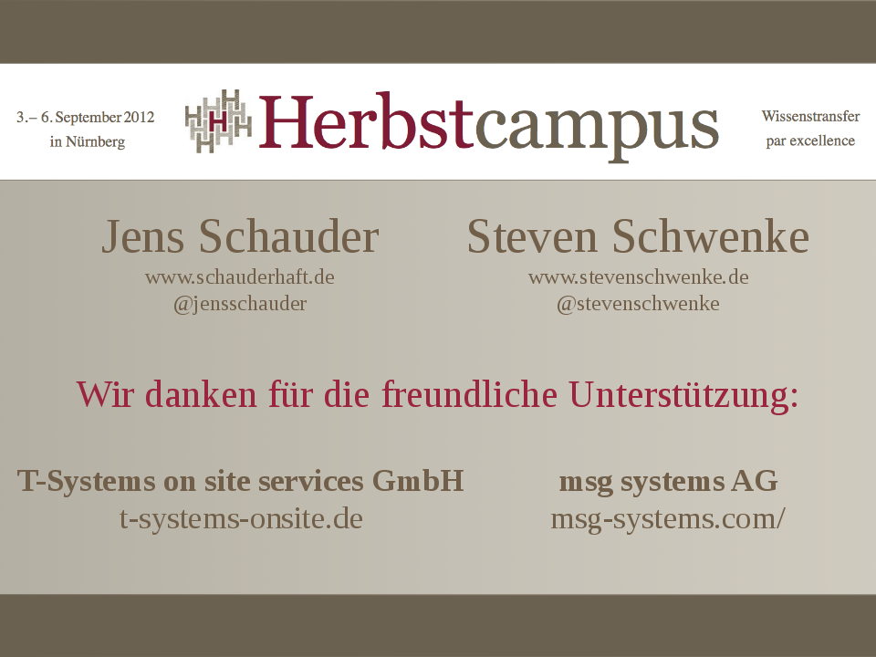

Warum sind wir hier?
Mentoren von Anfang an

Viele halbe Mentoren
Mitschüler
... mit denen man gemeinsam lernt
Lehrer
... die eine zu Jugend forscht lotsen
Kollegen
... die einen zur JAX mitnehmen
The good advice
you just didn't take
Alanis Morissette / Ironic
Wo ist mein Mentor?
Wo ist mein Mentee?
?
Mentoren / 2


Erster Arbeitgeber,
neue Ziele.

 (Atlas Detector, CERN)
(Atlas Detector, CERN)

Mission Statement:
- Offenheit
- Ehrlichkeit
- Exit-Strategie ohne "hard feelings"
Steven "Killer-Feature" Mentoring:
- Commitment.
- Beidseitige Weiterentwicklung.
Jens "Killer-Feature" Mentoring:
- Reflektion eigener Ideen durch Gruppengespräche
- organisierte Peer-Group für eigene Ideen
Werkzeuge
- Treffen einmal pro Monat:
- Gespräch
- Buchvorstellung
- "Was gelernt?"
- Commitment: Stets Fragen stellen können
- Technische Fragen stellen
- Rat holen
- Commitment: Jederzeit, z.B. per Handy
- Entwürfe Blog-Artikel gegenlesen
- Commitment: Ehrlichkeit, no hard feelings auf Empfängerseite
- Gemeinsame Vorträge, Konferenzen
- Commitment: Gegenseitig fördern (soweit möglich)
Eine großartige Erfahrung
Jeder sollte einen Ment[or/ee] haben
Zukunft
- evtl. Ortswechsel
- agiles Anpassen Mentoring
- Offenheit, Ehrlichkeit, konstruktive Kommunikation
- "Konvergenz" des Mentorings
- Kompliment schnell lernender Mentee + gut lehrender Mentor
- gegenseitig im Auge behalten
- spätere fachliche Kontakte
- Vitamin B
Konzepte:
- "halbe" Mentoren
- organisiertes M. in Unternehmen
- freiwilliges M.
- freiwilliges organisiertes M. (Freimaurer, Lions Club, Maybach-Foundation)
Überall Mentees / Mentoren
Auch hier im Raum!
